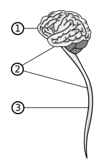
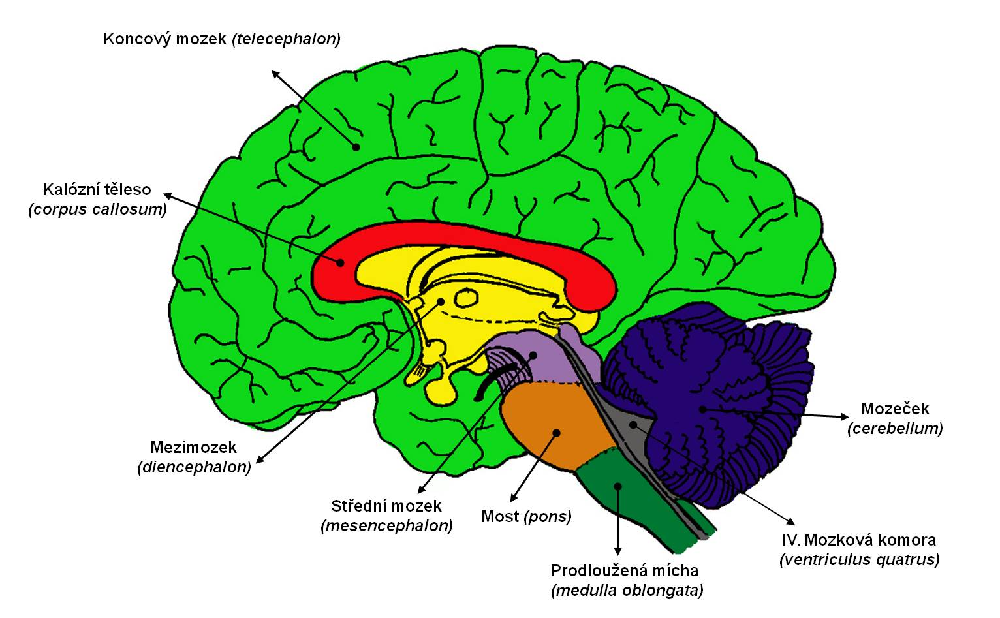

<!--
title: Nervová soustava
type: content
-->
<section id="only-content">
    <div class="blog-image">
        <a href="images/cns.svg"
            ></a>
        <p>centrální nervová soustava (CNS)</p>
        <p>1. tvrdá plena; 2. povučnice; 3. omozečnice</p>
    </div>
    <h2>Informace</h2>
    <ul>
        <li>
            <strong>řídí a kontroluje činnost</strong> všech částí organizmu
        </li>
        <li>stavební buňka - <strong>neuron</strong></li>
        <li><strong>mozek</strong></li>
        <ul>
            <li><strong>řídící orgán</strong> nervové soustavy</li>
            <li>80 % voda</li>
            <li>váha: 1,5 kg</li>
            <li>100 miliard neuronů</li>
        </ul>
        <li>
            <strong>reflex</strong> - odpověď organizmu na změnu vnitřního nebo
            vnějšího prostředí, I. P. Pavlov - pokus na psy o jídle
        </li>
        <ul>
            <li>
                podmíněné - získané na základě zkušenosti jedince, můžeme
                zapomenout
            </li>
            <li>nepodmíněné - vrozené a děděné</li>
        </ul>
        <li><strong>spánek</strong></li>
        <ul>
            <li>
                útlus činnosti nervové soustavy, snižuje se tlak, teplota,
                tempo, tempo dechu a srdce...
            </li>
            <li>důležitá regenerace</li>
            <li>nedostatek spánku -> duševní choroby</li>
        </ul>
    </ul>
    <h2>Mozkové váčky</h2>
    <div class="blog-image">
        <a href="images/mozkove-vacky.png"
            ></a>
        <p>mozkové váčky</p>
    </div>
    <ul>
        <li>koncový mozek</li>
        <ul>
            <li>evolučně nejmladší část centrální nervové soustavy</li>
            <li>smyslové vnímání a myšlenky</li>
            <li>pravá (emoce, fantazie) a levá (čísla, logika) hemisféra</li>
            <li>plná funkčnost kolem 22. roku</li>
        </ul>
        <li>prodloužená mícha - dýchání, tlukot srdce, vrozené reflexi</li>
        <li>Varolův most - spojení laloků</li>
        <li>mozeček - v zadní části, koordinace, rovnováha, pohybová paměť</li>
        <li>střední mozek - zrak, sluch</li>
        <li>mezimozek - hlad, tělesná teplota, hormonální soustava</li>
    </ul>
    <h2>Poruchy a nemoci nervové soustavy</h2>
    <ul>
        <li>zánět pozkových blan - virové onemočnění, nutná hospitalizace</li>
        <li>
            epilepsie - dědičné onemocnění, nýhlé záchvaty, ztráta vědomí +
            křeče
        </li>
        <li>otřes mozku - po nárazu, hospitalizace, ztráta vědomí</li>
        <li>
            cévní mozková příhoda - mrtvice - ochnutí poloviny obličeje, porucha
            hybnosti, vada řeči
        </li>
        <li>migréna - velká bolest hlavy</li>
        <li>duřevní choroby</li>
        <ul>
            <li>schizofrénie - střídání období deprese a normálního stavu</li>
            <li>bipolární porucha - střídání deprese a eufórie</li>
            <li>demence - častá je stařecká (80 let +)</li>
            <li>ADHD - hyperaktivita</li>
            <li>
                autismus - jiné vnímání světa, často nerozumí emočním a
                empatickým stránkám
            </li>
            <li>OCD - strach ze zapomenutí</li>
            <li>kleptománie - musí něco ukrást, i když ví, že je to špatné</li>
        </ul>
    </ul>
    <h2>Drogy</h2>
    <ul>
        <li><strong>alkohol je také droga</strong></li>
        <li><strong>způsobují otravu</strong> organizmu</li>
    </ul>
</section>
